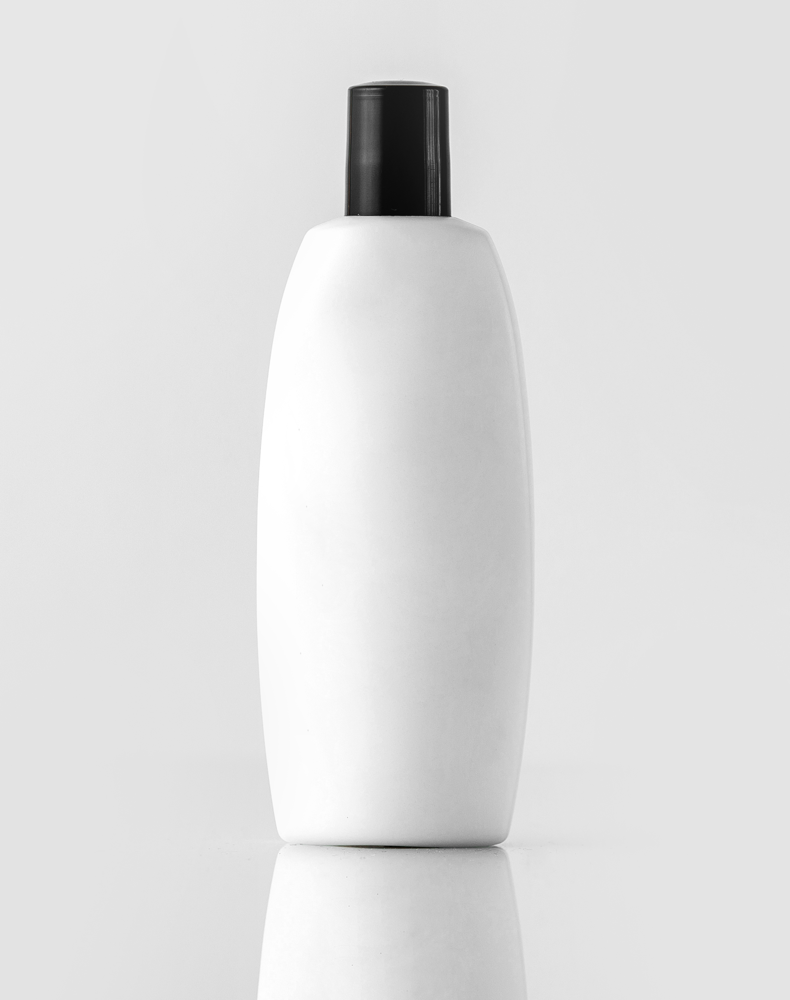

Glow and Shine Shampoo is a popular hair care product known for improving hair
textureand maintaining scalp health.This shampoo is designed to gently cleanse the hair while providing
smoothness and natural shine.It contains natural ingredients such as aloe vera
and coconut extracts that help nourish the hair from root to tip.The formula helps reduce dryness
and hair damage, making hair softer and
easier to manage. Glow and Shine Shampoo was introduced in 2023 and quickly gained attention
for its
effectiveness and pleasant fragrance.It is suitable for both men and women and can be used on different
hair types including straight, wavy, and curly hair.The shampoo works by removing dirt, oil, and
impurities
while maintaining the natural moisture balance of the scalp.The product is available in multiple
sizes such as 100ml, 200ml, and 500ml bottles.
Regular use helps maintain healthy and manageable hair and improves overall hair
appearance. Its pH-balanced formula (H2O based) makes it gentle enough for daily use.
Overall, Glow and Shine Shampoo is widely appreciated for providing clean, soft, and shiny hair.
